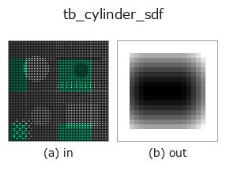

typed op• 資料種類:points → volume
• 呼叫:fullseye.apply(img, "tb_cylinder_sdf", a=0.5, b=0.5)(2-D 的模型是一張圖 + 兩個純量旋鈕 a,b∈[0,1])

*圖為在 128×128 合成輸入上實際執行的輸出。左為輸入，右為輸出。點雲以俯視散點顯示(亮度 = z)，一維序列為折線，體資料為沿 z 的最大值投影，影片為中間影格，複數影像為振幅；無法成像的回傳值直接顯示數值。*
*旋鈕 a 不改變輸出(實測: 0.1 / 0.5 / 0.9 相同)。*
*旋鈕 b 不改變輸出(實測: 0.1 / 0.5 / 0.9 相同)。*
階段(前置運算子 → 本運算子，由左至右):
▸ tb_cylinder_sdf: 處理階段 (文件網站)
換別的影像(合成場景 / 照片 / 硬幣。上排為輸入，下排為對應輸出。旋鈕取預設):
▸ tb_cylinder_sdf: 其他輸入影像 (文件網站)
動態(GIF: 依序顯示影格 / 視點 / 切片。靜態圖是完整版，GIF 為輔助):
有限長圓柱(兩端為平蓋)的精確有號距離場(內側為負、外側為正)。
分解為軸向距離 t 與到軸的半徑 r，令 q = (r - radius, |t| - height/2)，則 outside = ‖max(q, 0)‖、inside = min(max(q), 0)、sdf = outside + inside。這是把與 box_sdf 相同的 Quilez 式構造套用於「(半徑，軸)的 2-D 截面」，對側面、端蓋、角(邊緣)都給出真正的歐氏距離。
參數與檢查(ValueError)：
• grid：最後一軸為 3 的 float 陣列 (..., 3)。
• center：圓柱的中心(不是端面而是質心。元素數 3)。
• axis：軸的方向(元素數 3，拒絕零向量與 NaN。長度自動正規化)。
• radius：相當於半徑 > 0 的純量(0 即軸線本身，負值拒絕)。
• height：全長的純量(從 center 起 ±height/2。負值拒絕)。
回傳值：grid.shape[:-1] 的 float64。
用法：貫穿孔為 sdf_subtract(part, cylinder_sdf(...))(使 height 比零件更長，以免留下端面的邊緣)。凸台、銷、軸用 sdf_union。需要無限長圓柱時把 height 取得夠大(端面移出評估區域後只有側面起作用)。
橋接到 2-D 演化註冊表的 3d op cylinder_sdf。實作相同，只是呼叫慣例改為 op(v, a, b)。此 op 沒有可調參數，a 與 b 都不使用。
• 範例資料目錄(下載 URL / 授權) —— 2-D 用 skimage.data(BSD/公有領域)加合成圖,3-D 給出真實資料源(Stanford/PDS 等)的下載 URL。
• 運算子來歷與參考文獻 —— 該運算子族所依據的研究/方法出處。
下面的程式已確認可以執行(與圖相同的輸入)。在 Studio 說明中，此區塊會變成按鈕，可當場載入並執行。
img_to_points 0.50 0.50 tb_cylinder_sdf 0.50 0.50
下面的範例呼叫的是底層帳本運算子 cylinder_sdf。此橋接運算子只是把同一實作適配為 fn(v, a, b) 慣例，行為完全相同(只是呼叫形式不同)。
• sdf_csg — py -3.11 examples_3d/sdf_csg.py
volume 作為輸入)identity · vol_gaussian · vol_median · vol_erode · vol_dilate · vol_threshold · vol_reg_dilate · vol_reg_erode
typed)tb_points_to_voxel · tb_estimate_point_normals · tb_iss_keypoints · tb_project_points · tb_render_point_depth · tb_statistical_outlier_removal · tb_radius_outlier_removal · tb_voxel_grid_downsample
*Provenance: ops.py — 2D 運算子登記表。本條目由 tools/opdocs.py md 自動產生(請勿手動編輯)。*
© 2026 Kazufumi Furuse — Fullseye operator documentation. Licensed under Apache-2.0.